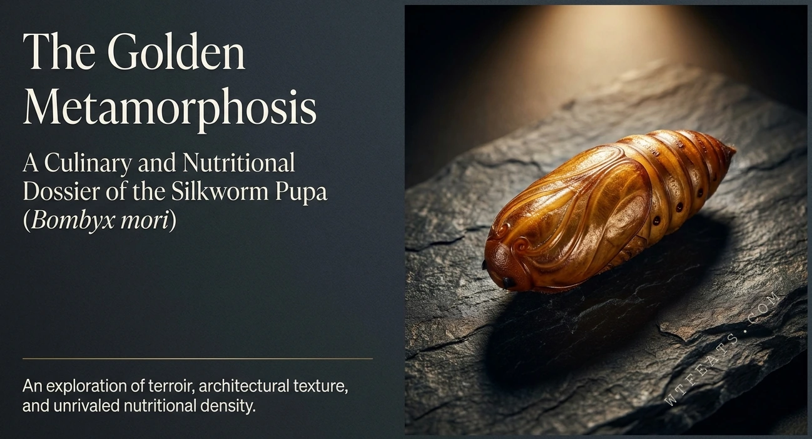
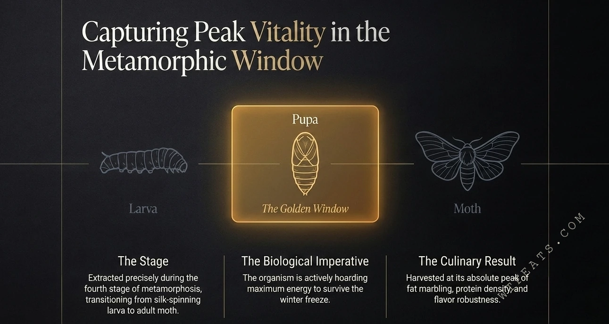
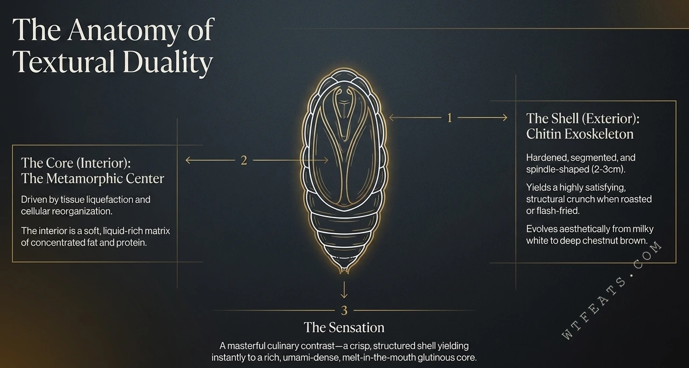

It is silkworm waste.
A leftover of the textile industry with no culinary standing of its own.
No. 003 / Specimen Nutrition Archive
The culinary and nutrition archive of the silkworm pupa (Bombyx mori). Exploring terroir, structural texture, and a record of unparalleled nutritional density — one pupa equals one egg.

A precisely "engineered" superfood, revered in silk regions long before nutrition science existed.
50–60g of quality protein per 100g dry weight, with a complete essential amino acid suite.
76× the calcium of beef and 4× the magnesium — an order-of-magnitude leap, not an edge.
Fig. 01 — An Ancient Equation
For centuries, China's traditional silk-producing regions — Yunnan, Northeast China, Jiangsu, Zhejiang — have guarded this culinary secret. Long before modern nutrition science could measure macronutrients, silkworm pupae extracted after silk reeling were revered as an elite source of vitality — a paradigm of dense nourishment.
The Northeast proverb says it plainly: one pupa equals one egg. The balance experiment agrees — and the modern ledger of protein, lipids, and minerals argues the old saying may actually undersell the pupa.
Fig. 02 — The Golden Window
From spinning larva to adult moth, the fourth instar is the sole harvest window — where nutritional density reaches its apex. The organism is actively stockpiling energy reserves to overwinter, reaching the maximum internal reserves of its entire life cycle.

Myth vs Fact
A leftover of the textile industry with no culinary standing of its own.
The domestic silkworm is a precisely "engineered" superfood with extraordinary macronutrient density.
Something eaten only when nothing better is available.
Silk regions prized the pupa for centuries as dense nourishment — gastronomic pleasure meeting medicinal value.

Fig. 04–07 / Visual Dossier
Textural duality dissected, the ultra-dense structural profile, the elite protein paradigm, and liquid gold lipids.
Open the dossierFig. 08–10 / Deep Dive
Redefining the mineral hierarchy, functional therapeutic effects, and the chef's precision handling protocol.
Read the archiveFig. 11 / Epilogue
Gastronomic pleasure × medicinal value × sustainable terroir — where three circles intersect.
Read the epilogueFig. 02 — Harvest Logic
Harvested at the fourth instar of metamorphosis, during the transition from spinning larva to adult moth — when nutritional density peaks.
The organism is actively stockpiling energy reserves to overwinter, reaching the maximum internal reserves of its entire life cycle.
Harvested when fat deposition, protein density, and flavor concentration all climax — delivering the deepest texture and richest nutrition.